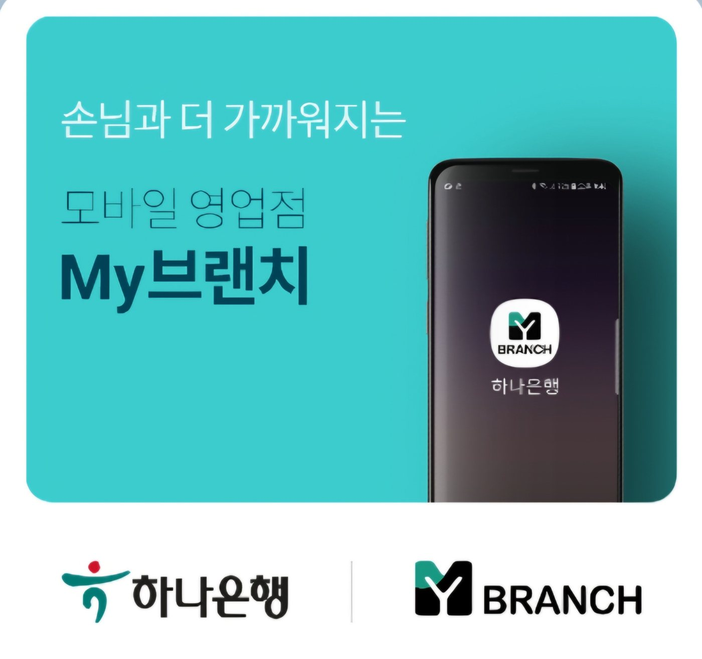

고객별 맞춤 설계
신용·소득·DSR·선수금·월 상환액과 향후 주택·전세대출 계획을 함께 살펴봅니다.
 AG 천팀장BMW AUTO FINANCE
AG 천팀장BMW AUTO FINANCE차량 가격 · 선수금 · 전액할부 가능 여부
월 상환 일정 · 신용점수 관리 및 유지
고객님의 상황에 맞는 금융 조건을 함께 찾아드립니다.

BMW X1·X3·X5·X6·X7, 3·5·7시리즈, i4·i5·iX까지. 하나은행 오토론 최장 120개월과 하나카드 AUTO할부 60개월을 비교하고, 실제 승인 과정에서 확인해야 할 조건을 안내합니다.
자동차 가격뿐 아니라 선수금, 기간, 신용 상태, 소득과 DSR까지 함께 살펴야 합니다. 10년 이상 자동차 금융 실무 경험을 바탕으로 실제 진행 절차와 유의점을 설명합니다.

신용·소득·DSR·선수금·월 상환액과 향후 주택·전세대출 계획을 함께 살펴봅니다.
BMW파이낸셜 유예금·프로모션·만기 상환 계획과 은행 오토론을 함께 비교합니다.
1차 조회부터 본 심사·송금·등록증 확인까지 단계별로 안내합니다.
승인 한도 확인을 넘어, 실제 월 부담과 미래 금융계획까지 고려하는 맞춤 상담을 지향합니다.
신용·기대출·소득·DSR·차량가격·선수금·월 상환액과 향후 주택담보·전세·신용대출 계획까지 종합 확인합니다.
은행 한도 부족 시 별도 금융상품 가능성을 확인하되, 심사·중복 금융 제한·약정·실행 순서를 검토하며 전액할부를 보장하지 않습니다.
같은 60개월이라도 하나카드 AUTO할부 등 실제 이용 가능한 상품의 금리·총이자·DSR·신용 영향을 비교합니다.
BMW 스마트할부의 장점을 존중하면서 만기 잔존금·재할부·대환·반납 조건을 고객 자금 계획에 맞춰 검토합니다.
AG는 심사·약정·차량대금 송금까지 지원합니다. 실제 차량 등록은 카매니저가 수행하며, 이후 AG가 등록증의 소유자·공동명의 지분 등을 확인합니다.
60개월 저금리 비교부터 120개월 장기 상환까지, 단순한 금리보다 실제 월 납입금과 총비용을 함께 살펴보세요.


신차 구매 · 상품별 적용 가능 여부 확인
BMW 판매처의 카드 결제 가능 여부부터 확인
월 납입 부담과 만기 유예금의 균형
같은 원금과 금리라면 기간이 길수록 월 납입금은 낮아지지만 총이자는 증가할 수 있습니다. 일부 중도상환이나 3~5년 뒤 차량 교체 시 잔여 원금을 상환하면 이후 기간의 이자 부담을 줄일 수 있으며, 수수료 및 상환 조건은 약정별로 확인해야 합니다.
스마트할부는 일부 원금을 만기까지 남겨 월 부담을 조절하는 구조입니다. 고객님의 자금 유입 계획에 따라 장점이 있지만, 만기 유예금과 재금융 조건도 중요합니다.
일정 원금을 만기까지 유예하므로 약정 기간의 월 납입금을 조절할 수 있습니다. 유예금은 사라지지 않으며 만기 현금상환, 재할부, 차량 반납 등은 개별 계약의 허용 조건을 확인해야 합니다.
만기 유예금을 두지 않고 원금을 장기간 나누어 갚는 방식을 검토할 수 있습니다. 다만 기간이 길수록 총이자가 늘어날 수 있으며, 중도상환 시 약정 수수료를 확인해야 합니다.
BMW 스마트할부와 은행 오토론을 함께 이용하거나 만기 유예금을 은행 오토론으로 대환하는 방식은 금융사별 중복 금융 제한, 차량 결제 절차, 기존 계약·담보, 실행 순서, 소득·DSR·심사 결과를 확인한 경우에만 검토합니다. 누구나 가능하다는 의미는 아닙니다.
BMW 주요 세단·SUV·전기차·고성능 모델별로 신차 금융조건을 상담합니다. 판매·취급 가능 여부는 시점별로 확인합니다.
※ 모델·세부 트림의 판매 여부, BMW파이낸셜·하나은행·하나카드 상품 적용 여부는 계약 및 심사 조건에 따라 달라집니다.
블로그에 공개된 실제 상담 내용을 바탕으로 정리했습니다. 상품 병행·대환·전액할부는 개별 계약 및 심사 조건에 따라 달라집니다.
48개월 후 자금 유입 계획에 맞춰 은행 오토론과 스마트 유예할부를 조합한 실제 상담
스마트할부 만기 잔존가치를 은행 오토론으로 대환한 실제 상담
취등록세 포함 필요 자금에 대해 은행 최종 한도와 부족금을 검토한 상담
스마트할부 유예금 대환 요청액을 확인하고 EV 오토론을 검토한 사례
간편 조회부터 최종 승인, 차량대금 결제까지 단계별로 확인합니다.
윤길A·수정B 블로그의 전체 최신 글을 발행일 기준으로 통합해 최대 6건 표시합니다. 특정 차종만 추려 보여주지 않습니다.
하나은행 해당 오토론 상품의 대상 차량과 고객별 신용·소득·DSR 등 심사 조건을 충족하면 최장 120개월을 검토할 수 있습니다. 최종 승인은 별도입니다.
아닙니다. 현금 상환, 재할부 등 선택지를 검토할 수 있으며 차량 반납은 해당 계약에 반납 선택권이 있을 때 약정 기준에 따라 가능합니다.
차량·기존 계약·담보·중도상환 비용·신용·소득·DSR·은행 상품 적격성 및 본 심사 결과에 따라 검토할 수 있습니다. 모든 경우에 가능한 것은 아닙니다.
일부 실제 상담 사례가 있지만 일반적인 보장 조합은 아닙니다. 중복 금융 제한, 결제·송금 방식, 약정, 심사 및 실행 순서를 반드시 확인해야 합니다.
필요 자금과 승인 한도, 금융상품별 결제 조건에 따라 검토할 수 있습니다. 부족금은 현금 또는 별도 금융상품 심사 대상이며 승인 보장은 없습니다.
판매처의 카드 결제 허용 여부와 카드사 상품 조건, 한도·심사 결과를 확인해야 합니다. 해당 비대출성 상품은 일반적으로 DSR 산정 제외 조건을 확인할 수 있습니다.
금리·기간·총이자·월 납입금·중도상환 조건과 향후 차량 교체 계획을 함께 비교해야 합니다. 장기할부는 월 부담을 줄일 수 있지만 총이자가 늘 수 있습니다.
차종·차량 가격·선수금·희망 기간을 알려주시면 검토할 항목과 조회 절차를 안내하겠습니다. 심사 결과를 보장하지 않습니다.